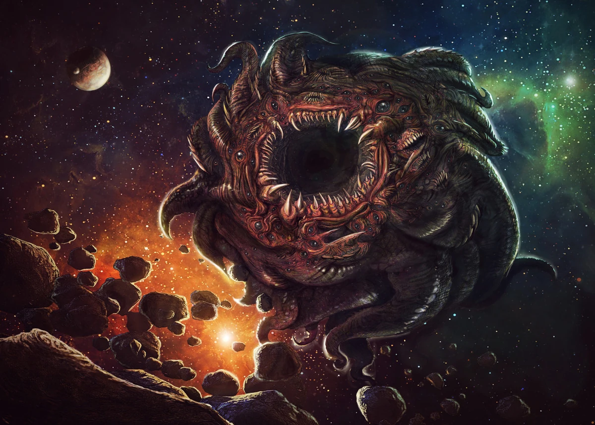
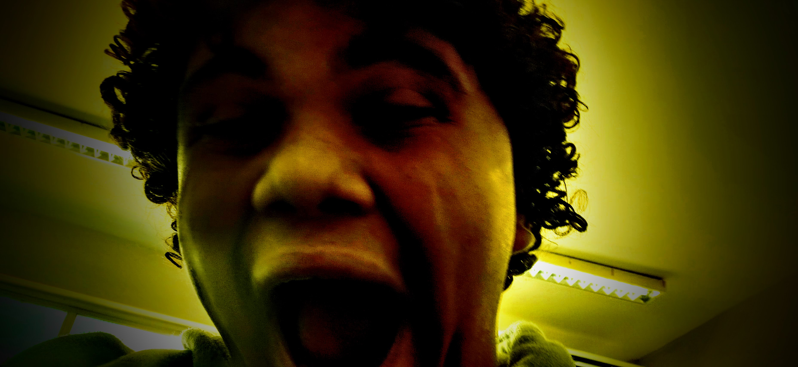
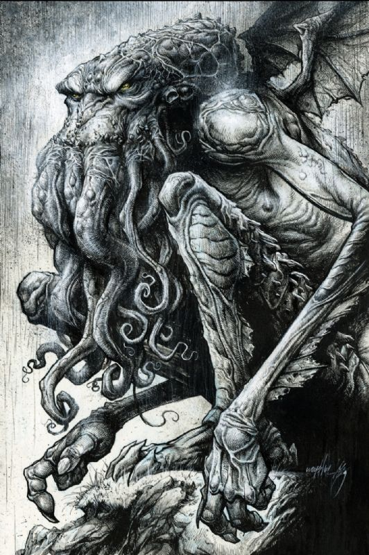
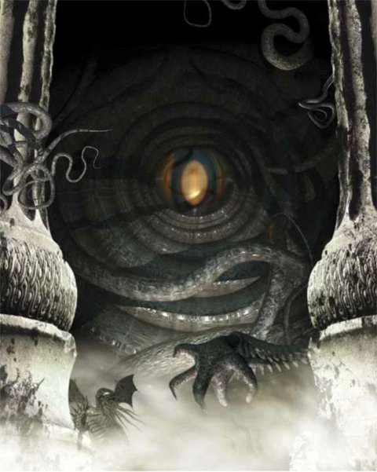
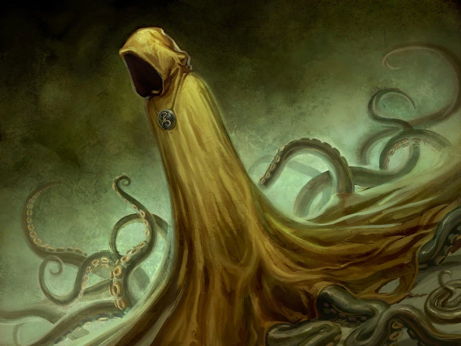
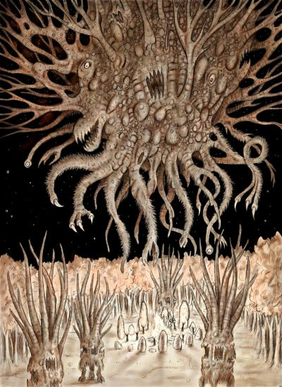

Abdul Alhazred, O Arabe Louco (1º Círculo - Limbo)
Literatura do Necronomicon: O autor dos textos mais proibidos da humanidade ensina a arte de redigir maldições, interpretar profecias de pesadelo e poetizar o desespero cósmico sem perder a rima.

Azathoth, O sultão demonio (2º Círculo - Luxúria)
Física do Caos Nuclear: Como o deus cego e idiota que comanda o universo dorme no centro de tudo, as aulas consistem em decifrar as flutuações atômicas caóticas geradas pelas suas flautas cósmicas.

Henzo "desgraça" Silva Matos (3º Círculo - Gula)
Química Proibida :Especialista em misturar elementos voláteis, fluidos estomacais de abominações e substâncias corrosivas para criar poções de indigestão eterna.

Cthulhu, O que descansa em R'lyeh (5º Círculo - Ira)
Biologia Marinha: Uma aula prática sobre as profundezas oceânicas mais insondáveis, estudando criaturas tentaculares gigantescas que desafiam a sanidade e a anatomia tradicional.
Patolino, O Mago Implacável (4º Círculo - Ganância)
Matemágica de Magia Negra: O egoísta e poderoso mago ensina cálculos exatos para invocar feitiços de destruição, desviar impostos dimensionais e conjurar o feitiço do DesINTEGRAÇÃO!, exigindo almas e relatórios no prazo sob risco de sofrer sua fúria.

Yog-Sothoth, A chave e o guardião do portão (6º Círculo - Heresia)
T.I. - Técnico em Inferno: Sendo o próprio espaço-tempo e as portas dimensionais, ele ensina redes de computadores interdimensionais, hacking de realidades paralelas e manutenção de servidores malditos.

Hastur, O inominável (7º Círculo - Violência)
Artes Profanas: Sob a influência do Rei de Amarelo, os alunos aprendem a criar peças teatrais e pinturas capazes de induzir a loucura coletiva imediata em quem as observa.
Nyarlathotep, O Caos Rastejante (8º Círculo - Fraude)
Sociologia: O Faraó Negro usa de mil faces e avatares para manipular massas, estudar o comportamento de cultistas cegos e entender como enganar civilizações inteiras com sorrisos falsos.

Shub-Niggurath, A Cabra Negra da Floresta com Mil Filhotes (9º Círculo - Traição)
Educação Física: Desafios de resistência extrema em florestas primordiais sombrias, onde correr dos filhotes da Cabra Negra é a única opção para garantir uma boa nota na média.